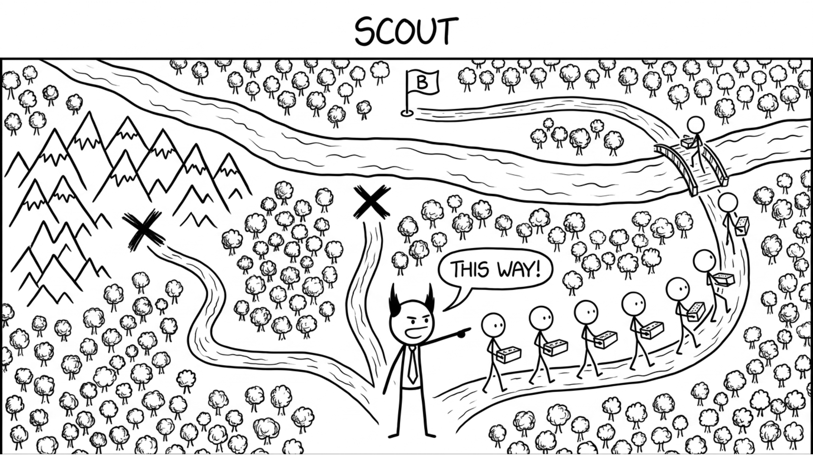

<section id="scout" data-transition="fade" style="display:flex; align-items:center; justify-content:center; padding:0; background:#fcfcfa">

<p style="position:absolute;left:0;bottom:10px;width:1920px;margin:0;text-align:center;font-family:'Patrick Hand', 'Trebuchet MS', sans-serif;font-size:22px;color:#8a8f98">Copyright Dobromir Montauk 2026</p>
<aside><b>Scout.</b> On the last slide we picked the mountains with no data. A scout would have found that dead end in two days. Scouting ahead is more work up front, but it's cheaper than committing the whole team to the wrong road for a month.<br>- Spike the vendor or POS API for two days before promising the integration date: auth quirks, rate limits, missing endpoints.<br>- Prototype the hard part first (latency, the hardware constraint, the model accuracy), not the easy UI.<br>- Ask who tried this before. The team that attempted it last year knows where it broke.<br>- Read the customer's actual setup (network, hardware, existing POS) before estimating.<br>Send one engineer for a few days, not the whole team for a sprint. The obvious approach is often the one nobody has taken end to end.</aside>
</section>
